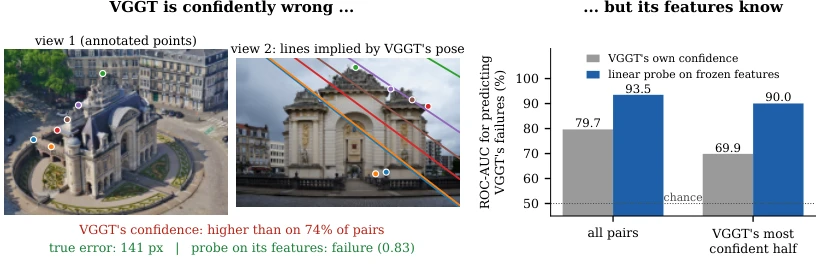
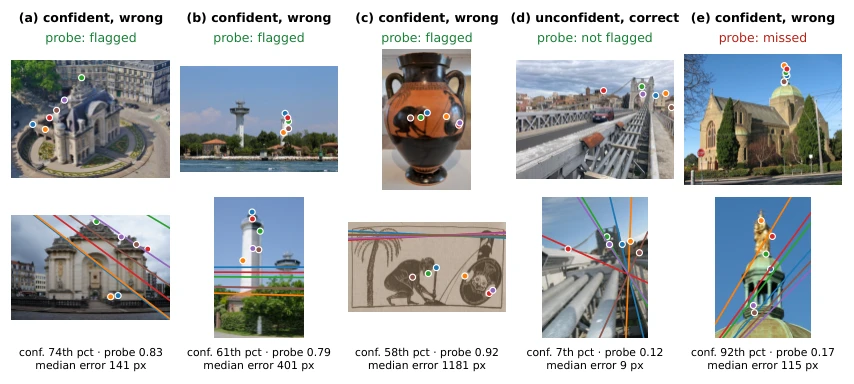

VGGT 知不知道自己不知道？冻结特征里的位姿失效信号
Does VGGT Know What It Does Not Know?
VGGT 不报位姿不确定性，但它的冻结特征里有一个几乎免费的失败信号：一个线性探针 ROC-AUC 93.5%（自带置信度 79.7%），按探针保留最可信的 50% 图像对，失败率从 34.9% 降到 3.8%；代价是需要失败标签训练探针，且它抓不到短基线的平移失败。
ROC-AUC on HardMatch
failure rate at 50% coverage
transfer AUC on PhotoTourism
transfer AUC on ScanNet translation failures
作者、单位与技术谱系 · Research context
作者与单位
研究脉络
- VGGT（Wang et al., CVPR 2025）方法基座关系：被探测的模型本身：1B 版本冻结使用，位姿与几何都由它一次前向回归；所有探针都挂在其内部层上，所有基线都取自它自己的输出。[论文 §3 与 §3.2]
- HardMatch 与 LoMa（Nordström et al., ECCV 2026）评测基座/同作者前作关系：HardMatch 提供 1,000 对人工标注对应点的困难图像对与官方评测协议（经基础矩阵算极线误差），LoMa 则作为「路由到专用匹配器」的对照。[论文 §3.1、§4.2 与参考文献 [18]]
- Co-VGGT 共视性探针（Ziliotto et al., 2026）与 LLM 内部状态可信度研究（Kadavath 2022；Burns 2023；Azaria & Mitchell 2023）同期前作/方法范式来源关系：Co-VGGT 是最接近的探针工作，但它探测的是场景共视性（场景属性），本文探测的是预测失效（预测属性）；「内部状态含有正确性信息」的范式来自 LLM 文献。[论文 §2 与 §4.3]
合作网络
- Adityan Thirumani Srinivasan ↔ David Nordström（跨机构共同署名）Adityan Thirumani Srinivasan → David Nordström关系：共同署名（同一论文、两所高校）[论文首页署名]
- 本文 ↔ HardMatch / LoMa（同作者评测资产）David Nordström → HardMatch benchmark / LoMa matcher关系：明确技术依赖（同作者基准与对照实现）[论文 §3.1、§4.2 与参考文献 [18]]
- 本文 → VGGT / π³（冻结权重 hook）VGGT self-knowledge probe → VGGT / π³ checkpoints关系：明确技术依赖（冻结权重 + 层内特征）[论文 §5 Limitations 与 §4.2]
作者与单位取自论文首页；「VGGT 是基座、HardMatch/LoMa 是同作者评测资产、Co-VGGT 是最近探针工作」均由正文显式表述或参考文献署名支持，属有来源的解读。原文未标通讯作者，不推断师生或实验室隶属；「代码将公开」是原文承诺，尚未核验。
方法本质拆解 · What actually changed
是不是微调？
不是。VGGT（1B）与 π³ 全程冻结，不更新任何权重；唯一被训练的是 128 维 PCA 之后的一个逻辑回归探针（外加 PCA 与标准化这两步无监督预处理）。因此它衡量的是「信息是否线性可读」，不是「模型能否被训练得更准」。
有没有额外约束？
约束在于评测协议而非模型：失败标签由中位极线误差 >50 px 定义（另测 10/20/100 px 以验证阈值稳健）；交叉验证按 HardMatch 类别分组，强制测试类别未见；置信区间按类别重采样；对比基线限定为「用户本来就能看到的输出」。这些约束让 93.5% 不能被解释为「在训练分布内记住了哪些类别」。
推理/后端到底做了什么？
推理时只需在已有前向中挂一次 hook 取指定层的池化特征，做一次 128 维投影与一次逻辑回归，成本约一个线性层，不增加骨干计算。没有迭代优化、没有集成、没有输入扰动（与 ReVar3R 那类扰动式不确定性不同）；输出是一个 0–1 的失效概率，用于排序与弃权，不是标定后的协方差。
方法本质是什么？
本质是「把模型内部对自身输出一致性的证据读出来」：相机头只回归一个位姿并丢弃了「两视图没能一致配准」的证据，而融合层的表示里还留着这份证据，线性探针把它投影成一个标量。它改变的是我们使用前馈几何模型的方式（先排序再决定信不信），没有改变模型本身，也没有解决短基线平移这一类几何上本就弱约束的失效。
输入冻结 VGGT 的中间层池化特征与一对图像；用按类别分组交叉验证训练一个线性探针预测极线误差超阈；直接效果是以约一个线性层的成本把失败预测 AUC 从置信度的 79.7% 提到 93.5%，并支持「只信一半」的选择性使用。

桥接价值Bridge
桥接价值
这篇把「几何基础模型的可靠性」从口号变成可测指标：同一批图像对上，模型自带置信度的 ROC-AUC 是 79.7%，而一个线性探针能到 93.5%，在 VGGT 最自信的那一半样本上差距更大（69.9% vs 90.0%）。对我们的桥接意义在于：因子图/平滑器需要的是「这条观测该不该信、信多少」，而这正好可以从冻结特征里读出一个排序信号，不必等模型厂商提供位姿协方差。它同时给出一个负面结论——失效不是单一标量，短基线平移失败需要另一套读出，这对我们设计鲁棒核很重要。
方法与模块Method
方法摘要
冻结 VGGT（1B），两帧一次前向，取 7 个深度处的特征（ViT 块 6/12/23、聚合器最后一个帧注意力块与最后一个全局注意力块、进入相机头的归一化相机 token、相机头 trunk 的最终输入），token 逐图平均池化成向量，一对图像取两图均值；探针是标准化后 128 维 PCA 上的 ℓ2 正则逻辑回归，正则强度由内层 5 折交叉验证选，类别加权。协议的关键是「按 HardMatch 类别分组 10 折交叉验证」——每个测试类别都没在训练中出现，置信区间用按类别重采样的 cluster bootstrap（1,000 次）。失败定义沿用官方协议：用预测位姿构造基础矩阵，对每对的手工对应点算对称极线距离，取中位数 > 50 px 判失败（另报 10/20/100 px）。第二个模型 π³ 用相同流程，只是它预测 camera-to-world 且无内参，因此用最小二乘从局部点图拟合焦距。
可迁移模块
可迁移的是三件具体的东西：第一，「冻结特征 + 线性探针 + 分组交叉验证」这套评估协议，可以直接用来回答「我们的骨干是否已经知道自己错了」，成本是一个线性层；第二，特征位置的选择——逐图编码器只有 65.0%，信号在聚合器中间层（块 11→12→13→15 从 69% 升到 93%），这意味着要用的是「融合后的表示」，而不是单图特征；第三，选择性预测的评价方式（risk–coverage 曲线 + 固定覆盖率下的失败率），比单一 AUC 更能说明「弃权一半能换来什么」。不宜直接照搬的是失败标签：HardMatch 用极线误差定义失败，换到我们自己的数据要重新定义（例如位姿残差卡方超阈），探针必须重训。

证据Evidence
关键证据与数字
主结果（HardMatch，903 对 / 97 类，失败率 34.9%）：探针 ROC-AUC 93.5%（AP 87.4），点图置信度 79.7%（AP 60.4），深度置信度 66.5%，相对旋转 62.9%，焦距比 51.1%；用 VGGT 全部输出训练的分类器 77.7%（AP 59.5）；ViT 块 6/12/23 分别 59.3/64.6/65.0。阈值 0.5 时探针整体准确率 87.5%，抓 87.6% 的失败、精确率 78.9%；置信度在同等标记量下准确率 74.0%、抓 68.3%、精确率 61.4%。选择性预测：保留探针最信的 50% 图像对，失败率 3.8%、mAA@10 34.9%；按置信度保留则 12.4% / 29.7%；理想 oracle 0% / 38.3%；risk–coverage 面积 0.096 vs 0.154（oracle 0.070）。迁移（PhotoTourism，1,262 对）：旋转误差 >15° 的探针 AUC 97.5%，>10° 为 94.6%，置信度 90.6/88.5，真值共视性 89.8/87.0；探针与对数旋转误差的 Spearman 0.43（置信度 0.33）。
边界与下一步Limits & Next Step
边界与风险
作者承认五条：只研究 VGGT 与 π³（更大更新模型可能不同）；HardMatch 无真值位姿，失败由约 11 个对应点的极线误差定义，混合了旋转/平移/内参误差；只研究图像对；探针是有监督的（需要失败标签），而置信度是免费的；单一探针覆盖不了短基线平移失败。数字上最该注意的是 ScanNet-1500：旋转失败迁移尚可（AUC 79.5 vs 置信度 58.7，域内探针 82.3），但平移主导的失败只有 44.2–47.6%（接近随机），而域内重训探针能到 91.0%——说明信号存在于特征里，只是方向不同，跨域迁移不能想当然。此外 16 视图输入时同一批图像对的旋转失败率从 3.6% 降到 0.3%，此时探针不再优于置信度；按探针剔除 10% 最不可信边做旋转平均，0.66° 对稳健平均 0.70°、oracle 剔除 0.67°，收益在噪声内。
下一步实验
第一，把「探针 + 分组交叉验证」搬到我们自己的骨干上，用我们自己定义的失败（位姿残差超阈或固定滞后偏差）做标签，对比探针与现有卡方/新息检验的 ROC，重点看「模型很自信但结果错」的子集上谁更好——这是本文最值钱的场景。第二，验证特征位置：只在单图编码器与融合层两处取特征，确认我们的骨干是否也呈现「中间层突现」，若是，则不必上大模型也能拿到可靠性信号。第三，把探针输出接进因子图，不是硬剔除而是作为边的鲁棒核尺度或自适应协方差，观察 ATE 与闭环一致性；同时复现本文的负面结果（短基线平移失败），确认我们的场景里主要失效模式属于哪一类，再决定要不要为它单独训一个探针。